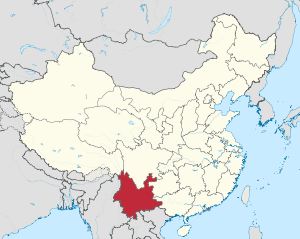
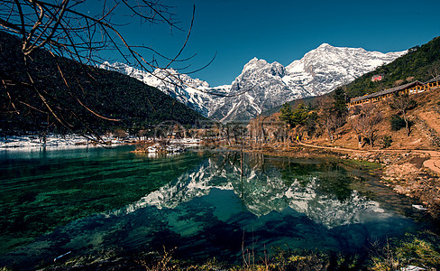

Yunnan n’est pas ma province, mais il est belle province que je pense dans mon cœur, dans les temps anciens, de nombreux poètes célèbres se sont rendus au Yunnan, laissant de beaux poèmes. Le Yunnan n'est pas aussi prospère que Shanghai et Pékin, mais il a une ville historique avec une atmosphère détendue et rétro. Coutumes folkloriques simples, gens enthousiastes, vêtements traditionnels. Un super endroit pour prendre des photos.
La province du Yunnan est appelée Yun ou Yunnan, et c'est l'une des 23 provinces chinoises. Il est situé dans la région sud-ouest et la capitale de Kunming. Il borde le Guizhou et le Guangxi à l'est, le Sichuan au nord, le Tibet au nord-ouest, le Myanmar à l'ouest et le Laos au sud. Le Vietnam est adjacent. La superficie totale de la province du Yunnan est de 394 100 kilomètres carrés..
Le terrain de la province du Yunnan est élevé au nord-ouest et bas au sud-est. Il descend progressivement du nord au sud et appartient au plateau montagneux. La zone de montagne représente 88,64% de la superficie totale de la province. Le terrain est délimité par la vallée du Yuanjiang et la large vallée dans la section sud des montagnes Yunling, et est divisé en deux zones de terrain principales: l'est et l'ouest. La partie orientale est le plateau oriental et central du Yunnan, qui fait partie du plateau Yunnan-Guizhou. Il se caractérise par de basses montagnes ondulantes et des collines arrondies. Les canyons alpins occidentaux sont entrecoupés de terrains difficiles, formant d'étranges et majestueux glaciers de montagne. La province du Yunnan traverse le fleuve Yantzé (Yangzi Jiang), la rivière des Perles, la rivière Yuanjang, la rivière Lancang, la rivière Nu Jiang (Salween) et la rivière Taping . Le climat du Yunnan appartient essentiellement au climat de mousson subtropical et tropical, et le nord-ouest du Yunnan a un climat montagneux de plateau.
Le Yunnan est un endroit où les saisons sont comme le printemps, il était autrefois classé parmi les dix plus belles destinations touristiques du monde par CNN aux États-Unis! Cette province prestigieuse.
 